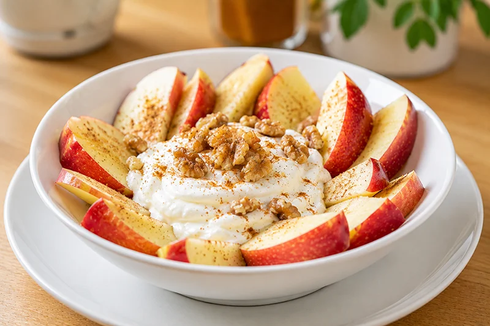

Receta saludable
Manzana con queso fresco batido
La manzana con queso fresco batido combina fruta y proteínas en un snack sencillo, fresco y muy saciante. Una opción saludable para disfrutar entre horas.
Ingredientes
- 1 manzana
- 150 g de queso fresco batido 0 %
- Canela en polvo al gusto
- 10 g de nueces troceadas (opcional)
Preparación
- Lava la manzana y córtala en gajos o dados.
- Coloca el queso fresco batido en un bol.
- Añade la manzana alrededor o sobre el queso.
- Espolvorea canela al gusto.
- Incorpora las nueces troceadas si deseas un toque crujiente.
- Sirve inmediatamente.
Consejo práctico
Si cortas la manzana con antelación, rocíala con unas gotas de zumo de limón para evitar que se oxide y mantener su color natural.